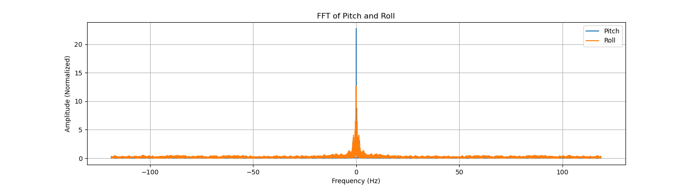
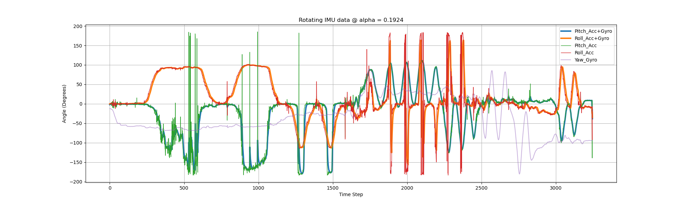
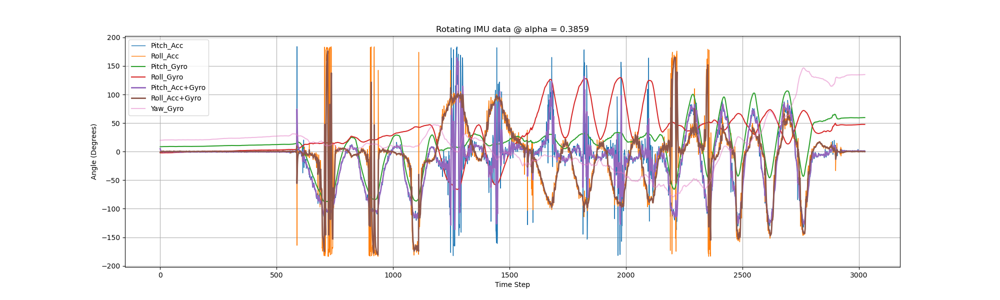

Objectives
Get familiar with the built in APIs to manipulate the ICM20948, learn how to access, store and transmit the data. Also get familiar with the RC car.
Here links to the demo codes for the IMU configuration library.
Task 1: Set Up IMU
Add a blinking feature to the board when the IMU is running. The result is shown in the video below.
The blue LED will blink for three times when the IMU is initiated, and then blink rapidly when the program goes into "loop() -> myICM.dataReady()".
Next, I try to move the IMU around. The signs of returned data are determined by the direction of acceleration along the 3 axies, the direction of rotation around the axes and the pose of IMU related to the earth magnetic field.
The signs can be shown below:
Accelerometer-X: + when the board is accelerating towards the negative X axis or the negative X axis is pointed to the earth;
Accelerometer-Y: + when the board is accelerating towards the negative Y axis or the negative Y axis is pointed to the earth;
Accelerometer-Z: + when the top surface of the ICM20948 module is facing upwards, or the negative Z axis is pointed to the earth;
Gyrometer-X: + when the rotation decomposed to X axis is right handed.
Gyrometer-Y: + when the rotation decomposed to Y axis is right handed.
Gyrometer-Z: + when the rotation decomposed to Z axis is right handed.
Magnetometer-X: + when the positive X axis is faced towards the north.
Magnetometer-Y: + when the positive Y axis is faced towards the south.
Magnetometer-Z: + when the positive Z axis is faced towards the south.
The orientations can be illustrated below.
Task 2: Accelerometer
Compute Pitch and Roll
The result of calculating the Pitch and Roll angles using only the accelerometer can be illustrated in the following video.
The result is not very accurate, because the ranges are not perfectly matched with \( \pm 90 \). The actual range of roll when the Y-Z plane is horizontal is \( [-87.40, 88.65] \). So that the factor should be \( k_{roll} = \frac{180}{88.65 + 87.40} = \frac{180}{176.05} = 1.02243 \), assuming the error is linear. Similarly, the pitch reading range is \( [-88 ,87] \), so the correction factor should be \( k_{pitch} = \frac{180}{175} = 1.02857 \).
Noise Analysis Using FFT
The traditional low pass filter in a physical circuit can be realized using a combination circuit of resistor and capacitor (RC). The first order low pass filter can be designed by specifying the cutoff frequency.
\( f_c = \frac{1}{2\pi\times RC} \to RC = \frac{1}{2\pi f_c} \to \alpha = \frac{T_s}{T_s + RC} = \frac{T_s}{T_s + \frac{1}{2\pi f_c}}\), where \( T_s, f_c \) represent the sampling period and the cutoff frequency.
Thus, the point is to select an appropriate cutoff frequency for the LPF. We can perform FFT on the collected continuous IMU data. The code and result of FFT are shown below. The data length is 16654 sample pairs for the Pitch and Roll.
The sampling interval is approximately 0.00421212 second for each pair of data. The sampled data in the time domain can be shown below.
Using the code below, we can get the frequency domain data.
# perform FFT using Scipy
# cutoff freq = 8~10Hz after observation
from scipy.fft import fft
T = 0.00421212 # from the terminal, the sampling freq.
P_FFT = fft(P_ACC_RAW)/len(P_FFT)
R_FFT = fft(R_ACC_RAW)/len(R_FFT)
freq_axis = np.fft.fftfreq(len(P_FFT), d = T)
plt.figure(figsize=(15, 4))
pl1 = plt.plot(freq_axis, np.abs(P_FFT), label = "Pitch")
pl2 = plt.plot(freq_axis, np.abs(R_FFT), label = "Roll")
plt.xlabel('Frequency (Hz)')
plt.ylabel('Amplitude (Normalized)')
plt.title('FFT of Pitch and Roll')
plt.legend()
plt.grid()
plt.savefig("task2_FFT_Pitch_Roll.png")
plt.show()

The figure above is a result of IMU data with handheld shakings.
If we initiate the DLPF (digital low pass filter) built in the IMU, the result itself can be rather smooth before any additional LPFs. The DLPF can be initiated in the setup() process.
Observing the curve above, we may select a cut-off frequency at 7~10Hz. We select 9Hz for further calculation.
Now we can implement the low-pass filter using the complementary filter, with \( \alpha = \frac{0.00421212}{0.00421212 + \frac{1}{2\pi \times 9}} \approx 0.1924 \). However, after implementing the filter the result will be distorted, meaning that we
do not need an extra complementary filter. The code for Pitch and Roll from accelerometer using the complementary filter as the DLPF is shown below.
const float alpha = 0.1924; // from the FFT result
pitch_a_LPF[n] = alpha*pitch_a + (1-alpha)*pitch_a_LPF[n-1];
pitch_a_LPF[n-1] = pitch_a_LPF[n];
roll_a_LPF[n] = alpha*roll_a + (1-alpha)*roll_a_LPF[n-1];
roll_a_LPF[n-1] = roll_a_LPF[n];
The time domain and frequency domain curves can be seen below. When we choose \( \alpha = 0.1924 \), the Amplitude of the time domain frequency will be distorted, while the frequency domain becomes smoother.

Now we try \( \alpha = 0.2093, f_c = 10Hz \) to see what's different.
As we increase the \( \alpha \), we are giving more trust to the current reading and less trust to the previous data. In other words, the cut-off frequency is increased. In the frequency domain, we can see the subtle fluctuations are more than that in the previous setting with smaller \( \alpha \). Considering that most ICM20948 boards will be initiated with the DLPFs on (for example, 6-order LPFs for the Accelerometer or Gyroscope are commonly seen, which is better than the first order LPF we are trying to implement here), we do not use LPF when we are solely relying on the accelerometer.
Task 3: Gyroscope
We can use the following code to compute the pitch, roll and yaw by integrating the Accelerometer and Gyroscope. There's a 1-order LPF for integrating the gyroscope and accelerometer readings. We test the IMU when it is placed still and is moving around.
pitch_a = k_pitch*atan2(myICM.accY(),myICM.accZ())*180/M_PI;
roll_a = k_roll*atan2(myICM.accX(),myICM.accZ())*180/M_PI;
// incorporating gyroscope.
dt = (micros()-last_time)/1000000.;
last_time = micros();
pitch_g = pitch_g + myICM.gyrX()*dt;
roll_g = roll_g + myICM.gyrY()*dt;
yaw_g = yaw_g + myICM.gyrZ()*dt;
// integrating AG
const float alpha_AG = 0.1924; // cut off freq = 9Hz
pitch = (pitch+myICM.gyrX()*dt)*(1 - alpha_AG) + pitch_a*alpha_AG;
roll = (roll+myICM.gyrY()*dt)*(1 - alpha_AG) + roll_a*alpha_AG;
yaw_g = yaw_g + myICM.gyrZ()*dt;
When we select \( \alpha = 0.1924 \) and the IMU is placed still, the results are shown below.
Analyzing the figures above, we can see that the pitch, roll and yaw readings from solely the gyroscope will drift overtime. But the fused pitch and roll angles remains near the time axis. Next, let's see what'll happen if we rotate the IMU and whether we should retune the \( \alpha \).
The figure below may be clearer for comparing the acc data and fused data.

As can be seen from the diagram above, there are several large spikes in the error curve. The mean error of pitch between accelerometer and fused data is \( 0.026707730212503725 \), and \( 0.14622728672620905 \) for roll. The standard deviation of pitch decreased from 63.50 to 60.09 (5% drop), and from 57.33 to 50.57 for roll (12% drop). Next, we try \( \alpha = 0.3859 \) (dt = 0.01s, \( f_c = 10Hz \)).


The mean error between ACC and fused data for pitch and roll are \( 0.030882352941176555 \) and \( 0.02507270323859883 \) degree respectively.
The standard deviation of pitch decreased from 48.69 to 44.20 (9% drop), and from 57.05 to 50.52 for roll (11% drop).
Personally, I would choose \( \alpha = 0.1924 \) since its result is smoother and does not lose much info compared to a greater cut off frequency. The error when \( \alpha = 0.3859 \) is smaller because the filtered curve is closer to the raw acc data.
The gyroscope raw data is not susceptible for quick shakes because the sampling rate of the Artemis Nano is not high enough to discretize the angles from the gyroscope readings.
If we are shaking the IMU too fast, the angular acceleration is still read each 0.01s, but the accelerating process may be much shorter than 0.01s. Imagine you are quickly shaking the IMU, it will speed up first and slow down to still at last.
If the whole process happend within 0.01s, the recorded data may be a huge number indicating only the accelerating process.
The result of quickly shaking the IMU can be shown below. Note that the pitch and roll from gyro have much more drift after shaking, compared to the beginning.
However, the fused data is quite robust even after quick shakings.
Task 4: Sampling IMU Data and BLE Transmission
It is not reasonable to use a large array to store all the sensor data for a long period, especially using char for array storage, the artemis' main thread overflows when trying to store a 128*7 float array (28.6kbits) if declaring the variable inside loop(). More memory can be stored using the static declaration. When using a float array to store data and sending each float sequentially, the data caputuring rate is 2.4375ms for each set of data (containing acc, gyro readings plus a time stamp). In average, the main loop reads each reading of the 7 at 2.871kHz, which is way faster than the IMU (the frequency divider is greater than 1, the internal sampling speed is around 1.1kHz for ICM20948, so the maximum data update speed is around 1.1kHz). But since each loop takes 2.4~2.6ms (around 410Hz), the IMU data cannot be fetched at maximum speed.
The pictures below show the result of requesting and decoding the float characteristic data via BLE.
The code in the board's main loop is shown below.
float time_p = millis();
#define max_data_length 1280
static float collected_data[max_data_length][7];
void loop()
{
BLEDevice central = BLE.central();
if(central){
digitalWrite(LED_BUILTIN, HIGH);
Serial.print("Connected to: ");
Serial.println(central.address());
while(central.connected()){
// float collected_data[max_data_length][7]; // 4bytes for each float, 57kb if 1024 bits.
unsigned int i = 0;
// write_data(); // keep PC awaiting
read_data();
if(start_send){
time_p = millis();
while(millis() - time_p <= 1*1000 && i < max_data_length){ // 1s
myICM.getAGMT();
collected_data[i][0] = millis();
collected_data[i][1] = myICM.accX();
collected_data[i][2] = myICM.accY();
collected_data[i][3] = myICM.accZ();
collected_data[i][4] = myICM.gyrX();
collected_data[i][5] = myICM.gyrY();
collected_data[i][6] = myICM.gyrZ();
i += 1;
}
// SEND_IMU_DATA
start_send = false;
for(unsigned int j = 0; j < i; j++){
// send via BLE, PC uses notification handler.
if(j == 0){
Serial.println("Sending...");
}
for(unsigned int k = 0; k < 7; k++){
tx_characteristic_float.writeValue(collected_data[j][k]);
}
}
Serial.println("Finished Sending");
Serial.print("Last stamp: ");
Serial.println(collected_data[i - 1][0]);
}
}
digitalWrite(LED_BUILTIN, LOW);
Serial.println("Disconnected...");
delay(100);
}
}
To store 5s IMU data, if we need to use the float array to store all the data, we will need a 1871*7 array, which occupies around 420kbit storage. We can only allocate this into the static program storage.
The static memory of Artemis Nano has a maximum 983040 bytes, meaning we can store 35108 groups of 7 floats. This allows a theoretical upper limit of 84 seconds's IMU acc and gyro data plus time stamps.
The code above does not optimize the transmission speed. Which is to be polished later.
As the figure below shows, a 1280*7 static float array is able to store IMU data during 4.389s, but transmission from board to PC takes 10min if conducted in sequential.
Task 5: Record a Stunt
To be done. Remote does not work for now.
Additional Record: Defining Params Inside Loop() Causes What
When filtering the IMU data in real-time, if we write those variable declarations inside the loop, it will cause the loop become slower as it iterates. Incorporating the acc and gyro for the pitch and roll angles, we can see the effective of increasing dt below.

THE END